Introduction to QGIS¶
Introduction¶
QGIS is a user-friendly open source Geographic Information System (GIS). It runs on Linux, OS X, Windows and Android. QGIS supports numerous vector, raster, database formats and provide extendable functionality. Learn more about the project at: http://www.qgis.org
QGIS is great because:
It is completely free. It doesn’t cost anything.
It’s free, as in liberty. If you think a feature is missing, you can sponsor the development of a feature, or add it yourself if you are familiar with programming.
It’s constantly developing and improving. Because many people continue adding features, it keeps getting better.
Extensive help and documentation is available. If you have problems you can always turn to the software documentation, other QGIS users, or even the developers.
QGIS provides a continuously growing number of capabilities provided by core functions and plugins. You can visualise, manage, edit, analyse data and compose printable maps. QGIS is also the platform which InaSAFE is built on, and so this document focuses on building foundational skills using QGIS.
Learning objectives:¶
Understand how to get QGIS
Understand how to install QGIS
Understand QGIS and its layout
Understand QGIS toolbars and how to manage them
Learn basic operation in QGIS
How to install InaSAFE from QGIS
Introduction to the InaSAFE toolbar and functionality
Data for this exercise:¶
The data for this exercise is available in Introduction to QGIS.zip which can be downloaded in InaSAFE Training Data Packages. To download QGIS, go to the QGIS Website (we will explain how to download and install QGIS later in this exercise). We will use the following QGIS project and data:
DKI_Jakarta_Introduction.qgs
Jakarta_roads_WGS84.shp
Jakarta_Flood_18113_WGS84.shp
Jakarta_Flood_HKV_WGS84.tif
Exercises¶
1. Getting QGIS¶
You can download QGIS software by accessing the main QGIS website:
Open your web browser and in the address bar at the top of the window type qgis.org. Press Enter.
The QGIS website will look something like this:
Click Download Now.
If you are using Windows, there are 2 versions of QGIS (version 2.18 and version 3.0). Choose Long term release repository (most stable) and click QGIS Standalone Installer Version 2.18 (32 bit or 64 bit depend your computer operating system). Your exact version number may be different.
If you are not using Windows, select your operating system from the menu. Follow the installation instructions.
2. Installing QGIS¶
After you download the QGIS software installer, the next step is to install QGIS to your computer.
Open the folder where you have the QGIS installation file.
Run the installation file. If you are installing QGIS version 2.x, it should look something like this:
Click Next and follow the instructions.
Once the installation is finished, you can open your QGIS in Start Menu.
QGIS will look something like this:
3. Understanding QGIS interface¶
Next, we will introduce the main QGIS interface. In general, there are four elements in QGIS:
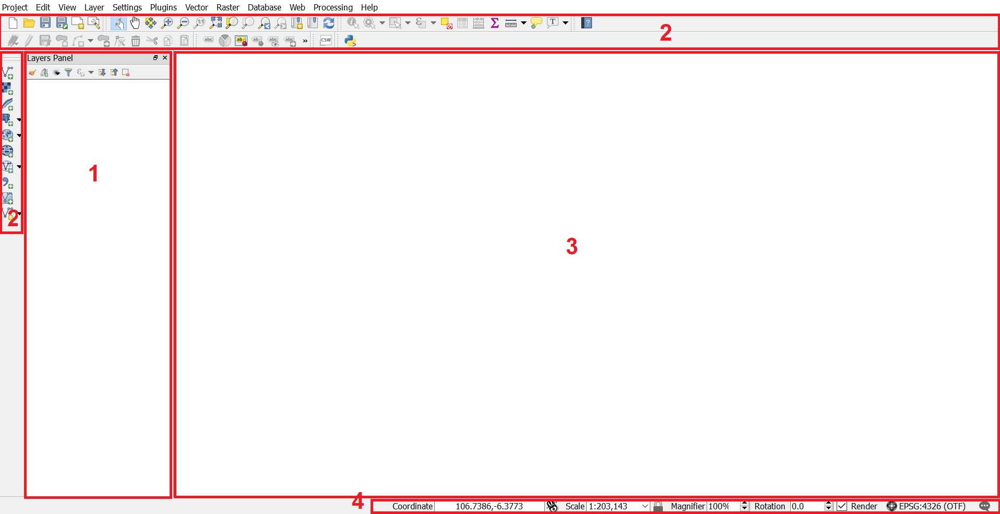Layers Panel: On the left side of QGIS is the layers panel. This panel lists the layers, or files, that are loaded into our QGIS project. The Layers Panel not only shows all the files that are currently open, it also determines the order that they will be drawn on the map canvas. A layer that is at the bottom of the list will be drawn first, and any layers above it will be drawn on top.
Toolbar: At the top of QGIS are a large number of tools, which are contained within various toolbars. For example, the File toolbar allows you to save, load, print and start a new project. We already used one of these tools when we opened this project.
By hovering your mouse over an icon, the name of the tool will appear to help you identify each tool. The number of tools (buttons) can seem a bit overwhelming at first, but you will gradually get to know them. The tools are grouped into related functions on toolbars. If you look closely you can see a vertical array of ten dots to the left of each toolbar. By grabbing these with your mouse, you can move the toolbar to a more convenient location, or separate it so that it sits on its own.
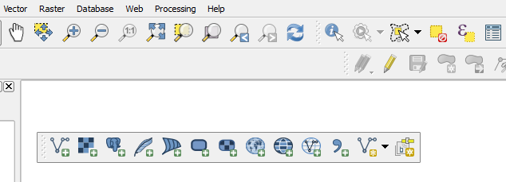Map Canvas: All of the map data that we load into QGIS will be displayed here, both vector data and raster data.
Status bar: The status bar shows information about the current map. It allows you to adjust the map scale and see the mouse cursor’s coordinates on the map.
The coordinates of this map are the same type of coordinates that are recorded by GPS devices. The status bar shows the longitude and latitude of your mouse cursor.
4. Manage toolbars¶
At the top of QGIS are a large number of tools, which are contained within various ‘toolbars.’ For example, the File toolbar allows you to save, load, print, and start a new project. We already used one of these tools when we opened this project.
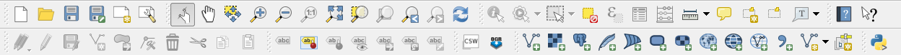By hovering your mouse over an icon, the name of the tool will appear to help you identify each tool.
The number of tools (buttons) can seem a bit overwhelming at first, but you will gradually get to know them. The tools are grouped into related functions on toolbars. If you look closly you can see a vertical array of ten dots to the left of each toolbar. By grabbing these with your mouse, you can move the toolbar to a more convenient location, or separate it so that it sits on its own.
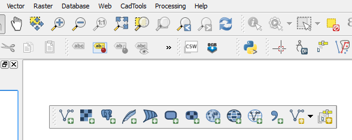If you feel overwhelmed by the number of toolbars, you can customize the interface to see only the tools you use most often, adding or removing toolbars as necessary.
To add or remove a toolbar, right-click on empty space in toolbars, or go to .
Rearrange the toolbar so that it’s on one line. Left-click and hold the vertical dots on the left hand side of the tool. Drag to the first line of the toolbar.
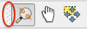5. QGIS basic tools¶
We’ve already taken a look at the QGIS toolbar and have seen the tools for opening QGIS. Here’s a list of some of the most commonly used tools. Feel free to play around with them if you like. The important thing for now is to start getting familiar with QGIS.
Add Vector Layer |
Add vector data to Layer List |
|
Add Raster Layer |
Add raster data to Layer List |
|
New |
Create new QGIS project |
|
Open |
Open QGIS project |
|
Toggle Editing |
Edit features in a layer |
|
Pan Map |
Drag the map to a new location |
|
| 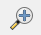 | Zoom In |
Zoom in on the map |
| 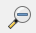 | Zoom Out |
Zoom out on the map |
| 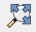 | Zoom Full |
Zoom so that all layers fit in the map window |
Identify features |
Identify the attribute of an active layer in the map canvas |
|
Open Attribute Table |
Open a layer’s attribute table |
|
| 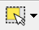 | Select Single Feature |
Select a feature in the selected layer |
7. Hide and move layers¶
Sometimes if you handle many layers, you need to hide/unhide layers
to make the map canvas more organized. For example,
open the pre-saved QGIS project, DKI_Jakarta_Introduction.qgs.
Once all the data are displayed on your map canvas, try toggling the layer,
Flood continous raster (2007) by clicking on the checkbox
in the Layers Panel on the left side of your screen.
After you uncheck the check box, the layer will disappear from the map canvas. This operation won’t remove your layer from the layers list but only hide it temporarily until you recheck again the check box. Try to turn ON the layer again to unhide the layer.
What if your layer does not appear in the map canvas even though you already turned ON your layers? In this example, the Jakarta_roads_WGS84 layer didn’t appear in Map Canvas even though it’s already turned ON. In this case, it’s related to layer order. The layers in your Layers List are drawn on the map in a certain order. The layer at the bottom of the list is drawn first, and the layer at the top is drawn last. By changing the order of the layers in the list, you can change the order they are drawn in.
For example in this layer order…
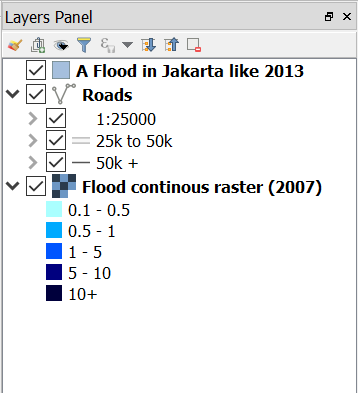… would result in Jakarta_roads_WGS84 being hidden as they position underneath A Flood in Jakarta like 2013. To solve this problem, simply click the Jakarta_roads_WGS84 layer and drag to the top of the Layer List or reorder them to the correct order.
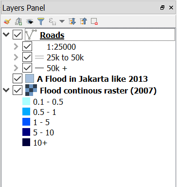What do you see after you move the Jakarta_roads_WGS84 layer?
You can see the road network now because the Jakarta_roads_WGS84 layer is shown above the other layers.
8. Symbolise layer¶
The symbology of a layer is its visual appearance on the map.
One of the basic strengths of GIS is that you have a dynamic visual representation
of the data you’re working with. Therefore, the visual appearance of the map
(which depends on the symbology of the individual layers) is very important.
For example in the project that you currently have open, DKI_Jakarta_Introduction.qgs,
you will see the A Flood in Jakarta like 2013 layer covering the area of DKI Jakarta.
Did the flood really cover the whole of DKI Jakarta?
To answer this, let’s turn OFF the Jakarta_roads_WGS84 and Flood continous raster (2007) layers and open the attribute table of A Flood in Jakarta like 2013 by right clicking the layer and selecting Open Attribute Table. You will see there are 6 columns in this table and one of the columns has the name ‘FLOODPRONE’ with values of Yes and No. A value of Yes represents an area that is flooded, while a value of No represents an area that has not been flooded. Let’s select a feature in this layer and see the highlighted feature in the attribute table.
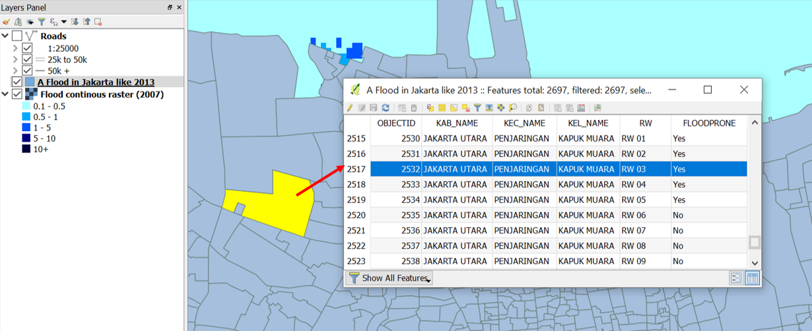What is the value of the selected feature in the attribute table?
Not all of the features in this dataset have a value of Yes (or flooded). You need to see which features have a value of Yes to make it easier to interpret the hazard area. To solve this problem, we will symbolise the data so it will only shows the flooded area.
Right click on the A flood in Jakarta like 2013 layer and select Properties.
Go to the Style tab and and change Single Symbol into Categorized.
Select affected in Column as the column that we will use to categorize the data.
Click classify and turn off the values that have a value of No or no value.
Click OK
After you click OK, only features that have a value of Yes (flooded) will be displayed on the map canvas, the other values won’t be shown on the map canvas because you turned OFF the symbol that represents a value of No. Symbology helps us better understand the data that we will work on.
9. InaSAFE installation and set up¶
As we know, the InaSAFE plugin has been built for QGIS. It is one of the plugins which are available in the QGIS Repository. Make sure that you have a working internet connection before you follow the steps below. To get InaSAFE please follow these steps:
Go to menu.
Go to the search box and type InaSAFE.
- Select InaSAFE and click Install plugin and
wait for a moment until the InaSAFE dock appears in the right side of QGIS main window.
Close the plugin manager window.
Congratulations! Now you have InaSAFE installed in QGIS.
10. InaSAFE toolbars¶
After successfully installing InaSAFE, you should now have an InaSAFE dock on the right hand side of your screen. It should look like this:
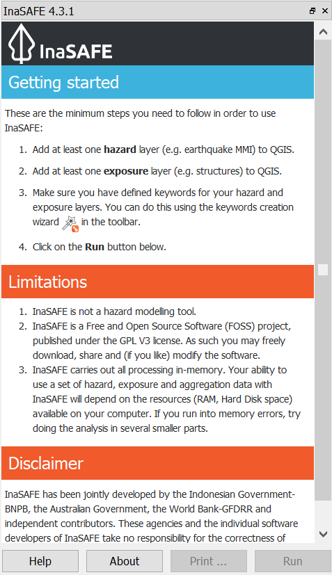InaSAFE also comes with a toolbar of its own! To retrieve the InaSAFE toolbar, you can right-click on the top toolbar and check InaSAFE.
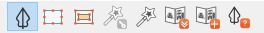InaSAFE Dock |
|
Set Analysis Area |
|
Toggle Scenario Outline |
|
Keyword Creation Wizard |
|
Impact Function Centric Wizard |
|
OpenStreetMap Downloader |
|
Add OpenStreetMap Tile Layer |
|
InaSAFE Help |
Later we will explore and use these tools in Run Basic InaSAFE and Intermediate Modules.
Summary¶
In this exercise you have learned about QGIS, the free and open source software for processing spatial data. You have learned where to get QGIS, how to install QGIS, understood the QGIS layout and looked at some useful toolbars, learning how to turn ON/OFF QGIS layers, and learned how to symbolise the data layers.
We also learned how to install InaSAFE through the QGIS plugin manager. Later on we will learn how to operate InaSAFE with DKI Jakarta flood scenario.